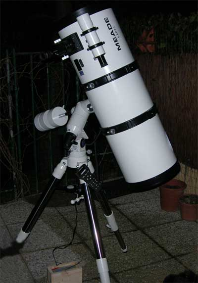

Telescopio schmidt-newton da 25 cm |
|
Le serate dedicate all'astronomia avranno luogo nei seguenti giorni:
- Giovedì 21 giugno ore 21,30
- Giovedì 12 luglio ore 21,30
- Giovedì 19 luglio ore 21,30
- Domenica 12 agosto ore 21,00
|
Presso l'Osteria del Fantorno in via S. Pietro 70 Monghidoro.
Verranno illustrate le caratteristiche del cielo estivo, e tramite l'ausilio di un laser, sarà possibile individuare costellazioni, stelle e pianeti. Tramite l'impiego del telescopio si potranno vedere alcuni oggetti interessanti del profondo cielo.
La partecipazione è libera e gratuita. Possibilità di ristoro al Fantorno
In caso di maltempo le serate saranno spostate allo stesso giorno della settimana successiva. |
|